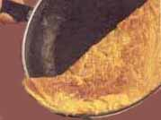

L'alimentation du dahu de Camargue

Fiche alimentaire
- Aliment
- Omelette (poule, oie, flamant)
- Origine du goût
- Œufs de flamant rose
- Préférence
- Omelette faite, jamais fraîche
- Menace
- Braconnage aux œufs
L'alimentation du dahu de Camargue est un aspect des plus intéressants, parce que c'est une véritable énigme. Autant le dahu de Savoie se nourrit de choses ordinaires (baies, glands, pissenlits), autant l'alimentation du dahu de Camargue est inattendue : il montre un goût immodéré pour les omelettes. Comment un tel changement a-t-il pu se réaliser, alors qu'il est biologiquement identique ? Plusieurs chercheurs indépendants et non subventionnés se sont penchés sur la question : il semble qu'en cage, le dahu n'accepte aucune autre nourriture que des omelettes, alors qu'en liberté, lorsqu'il est affamé, on l'a vu manger ce qu'il trouvait...
Les plus documentés pensent qu'à son arrivée en Camargue, le dahu n'a pas trouvé son alimentation habituelle (baies sauvages, glands, châtaignes). Il aurait alors mangé des œufs de flamants roses, qui pullulent dans la région. D'ailleurs le nid de flamant rose est juste à la limite de l'eau, ce qui fait qu'il est exactement sur le passage du dahu, qui est obligé de suivre la rive. Comme l'œuf de flamant rose est légèrement toxique, il lui arrivait de ne pas le manger d'un coup, et il le finissait après l'avoir laissé ouvert au soleil. L'œuf était alors transformé en omelette, et légèrement faisandé : dans ces conditions, il n'était plus toxique, et devenait un véritable régal pour le dahu. Des expériences ont montré que maintenant le dahu ne faisait aucune différence entre les omelettes d'œufs de flamants, de poules, ou d'oies. C'est peut-être ce qui explique qu'il soit un peu plus gros que le dahu de Savoie, et qu'il ait le poil plus fourni.
C'est d'ailleurs ce qui menace le plus la survie du dahu : comme il ne sait pas résister à une omelette, les braconniers en profitent. D'ailleurs la plupart des bons guides touristiques le précisent : si vous allez en Camargue, évitez d'avoir des œufs frais dans votre voiture, vous pourriez avoir des ennuis avec la gendarmerie, surtout si vous avez aussi un sac dans le coffre. L'office de tourisme des Saintes-Maries-de-la-Mer fait toujours très attention d'avertir les touristes sur ce point.